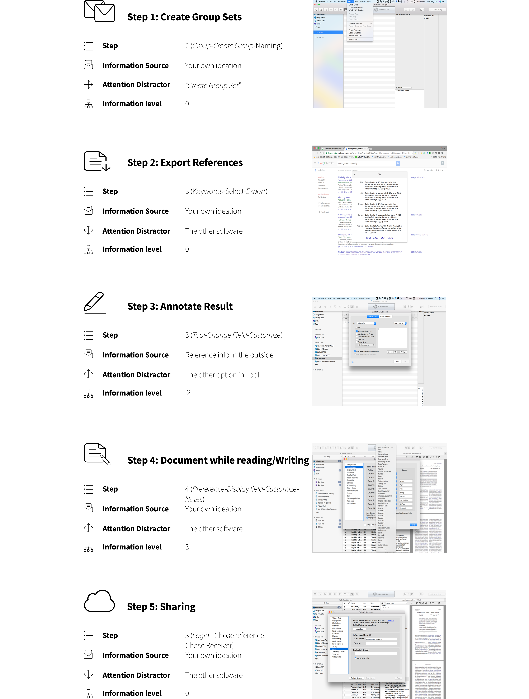
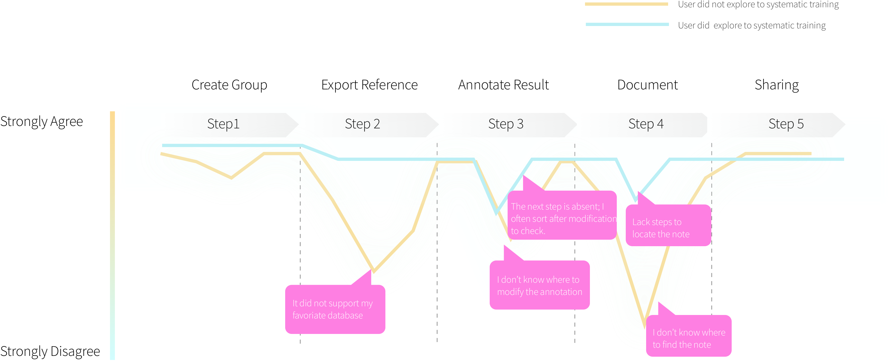
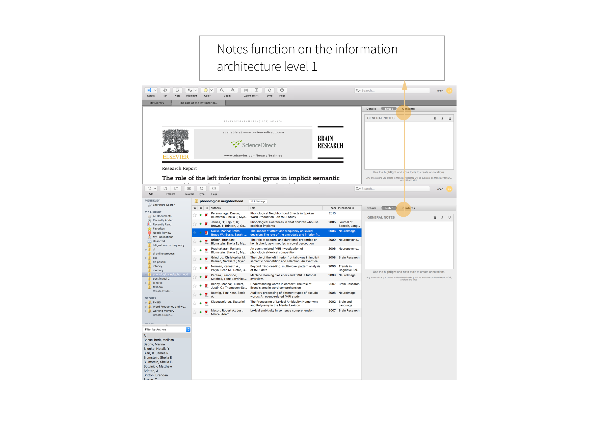

Endnote Reference Management Software
Assessed With Cognitive Loads Model
Date
Jan/2018 - Feb/2018My role
UX DesignerTool
Adobe Illustrator
Adobe Photoshop
SketchWhat I have learned
Cognitive Analysis
Contextual Inquiries
Endnote Reference Management Software
Assessed With Cognitive Loads Model
Date
Jan/2018 - Feb/2018My role
UX DesignerTool
Adobe Illustrator
Adobe Photoshop
SketchWhat I have learned
Cognitive Analysis
Contextual Inquiries
Endnote is one of the most popular and influential research manager software in the market. It aims at the literature researchers who need to read, manage, and write articles extensively. The functions it designed not only includes managing the reference but also contains searching, organizing, writing, publishing, and sharing papers.
With free reference management software springing up, Endnotes has been losing his users. The most frequent complaint heard from the users is that Endnote is not friendly to a new user when comparing to the free reference management software Mendeley.

Unlikely to free software, reference management software serves specific user group. For Endnote, it is better for users to learn how to use reference management software systematically from online courses, library writing workshop, or tool books. However, during field interview (10 graduate student), only three graduate students had attended a workshop or read the tool books.
Ideation1: It is more friendly to display core functions in the main page.
To identify the tasks during doing a reference management, I collected information from Endnotes official website and UTD reference management workshops.
Cognitive Model of Doing a Literature Review
Instead of making a traditional contextual inquiry to gain activities' information from observing user while doing a literature review, I used cognitive loads analysis to explore the cognitive loads during the whole task.
Instead of asking users' feeling and emotion, I identified four key quantitive indexes to ask users' identifications from previous research.
Cognitive Load
Cognitive load is a cognitive science concept referring to the information we need to hold in working memory during a task. Cognitive loads affect the efficiency of the work performance and the emotion.
Cognitive loads are affected by intrinsic and extrinsic cognitive loads (Mdelina. K, 2017):
Intrinsic Cognitive Load
Element interactivity, and the prior knowledge
Extrinsic Cognitive Load
The multiple media principle, the modality principle, the coherence principle, and the split attention effect
To quantify the cognitive loads in behavioral actions, I generated 4 key indexes from Melina Klepsch's Cognitive Loads Model.
Based on Melina Klepsch's Modal, I used the "Naïve rating" Methods. "...Participants did not be told about the cognitive loads. And all items had to be rated on 7-point Likert scales from “completely wrong” to “absolutely right.” As an eighth question, the naïve rating included the same question as the informed rating about the overall mental load during the learning situation." The questions are shown in the following with pictures.
Failed Attempts
At first, I tried to use the modal to caculate the cognitive loads data. However, the results were not significant under the model standards. Meanwhile, I noticed that users gave valuable report on each question, so I made the native rating scale which native rating score is the Y axis and horizontal axis indicates the steps.
Native Rating of Each Step on Doing Literature Review

As we can see, for different level of exposure users, they rated differently on each steps.
For different level users, they both felt uneasy on step 3 which is documenting during reading and writing. According to their reports, they had different reasons. For the experienced user, he thought "the note function in reading mode did not fix which is annoying when you are quickly reviewing the paper." For the new experienced user, he could not find where to write the notes.
Remember the components of cognitive loads? I tried to the idea the solution in reducing the extrinsic and intrinsic cognition loads.
Ideation 1: Bring the note function in the main window; As the same time. Ideation 2: Fix the note function just below the basic paper pieces of information such as abstract and author.
Other important feedbacks we heard from experienced users during the step 3 (annotation) were that users might sort reference to make sure if they modified correctly. , So an easily found, customized, sorting function is needed.
Mendeley is a free desktop and web program produced by Elsevier for managing and sharing research papers, discovering research data and collaborating online. Each reference software has its strength. Mendeley is strongly recommended for its managing and editing pdf function. After reviewing the comments on libraries' comments board, one of Mendeley great character is a note-taking function on its main window during viewing pdf.
Followed the research results, I bought the note function and customization function into the main window. You can find the note function in the top of the reference section, and in the top of the reference name section you can sort reference by selecting customization.

The End